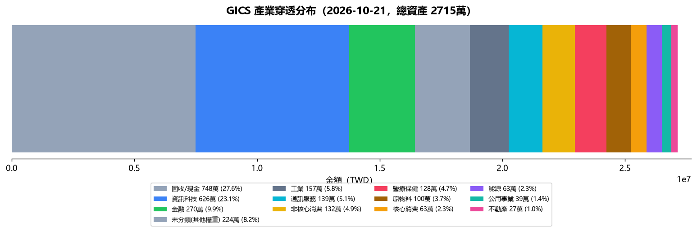

| 項目 | 內容 | 影響 |
|---|---|---|
| 總資產 | 27,149,049 TWD | 流動資產（不記錄不動產）；負債率 50.7%（含不動產）｜流動負債率 114.1%（不含不動產） |
| 總負債 | 30,987,736 TWD | 總負債合計（含房貸、保單借貸、質押） |
| 本月領息 | 167,096 TWD | 保單 53,538 + ETF 14,540 + 基金 99,018 |
| 被動月收 | 224,096 TWD | 實收：配息 167,096 + 房租 57,000｜預期：房租 80,100 + 配息保守 100,000 |
📌 口徑速記：月支出 159,210（v4 定版）｜配息 167,096（實收=常態）/ 100,000（保守）｜被動保守 180,100（配息 100,000 + 房租 80,100）
⚠️ 配息為截至今日實收，月底前依配息接力時程陸續補齊（撥回入帳後覆蓋率更高）
| 戰略類別 | 金額 TWD | 佔比 | 目標 | 缺口 |
|---|---|---|---|---|
| TW 台股市值型 含證券、平台基金與保單穿透部位，非證券帳戶市值；不同資產類別可能涉及穿透歸類 | 2,982,288 TWD | 11.0% | 10% | +1.0pp |
| 🇺🇸 美股市值型 | 10,121,857 TWD | 37.3% | 30% | +7.3pp |
| └ 科技股 | 3,866,107 TWD | 14.2% | 15% | -0.8pp |
| └ 非科技 | 6,255,750 TWD | 23.0% | ||
| 🛡️ 防守型配息 | 4,937,090 TWD | 18.2% | 30% | -11.8pp |
| 💵 債券 | 6,857,668 TWD | 25.2% | 25% | +0.2pp |
| 💵 安全現金（桶位＝餘數法） | 1,208,630 TWD | 4.4% | 5% | -0.6pp |
穿透分母：台股+美股+防守+債券（不含不動產）；管理費~1.5%，偏高於配息收益率。
【台股/大盤】 加權指數：46,292.93 (-1.13%) 台積電：2,405.00 (-0.62%) 【美股/外資】 美股：道瓊 51,966.03 (-0.07%) / 納指 26,430.89 (+1.11%) / S&P 7,690.73 (+0.41%) 費半：11,316.34 (+1.61%) 【CPI/利率】 美國CPI：美國 7 月 CPI YoY 3.5% (FRED 8/13)；Core 2.8% (FRED 8/13) 【賣出訊號】 無 【買進訊號】 無 【最新市場消息】 • 台股量縮「一個月最低」！不到8千億元 分析師喊：恐加大震盪 (來源：tw.stock.yahoo.com) • 台股震盪信心依舊！股民嗨喊「上看10萬點」分析師揭台積電甜甜價 (來源：tw.stock.yahoo.com) • 今日台股》權值股尾盤賣壓加重！台股終場下跌529點 PCB族群開高走低、「這些族群」逆勢走高 (來源：tw.news.yahoo.com) 【持倉關聯分析】 台股持倉市值型成長 2,969,168 TWD，今日大盤下跌 -1.13%，短線承壓。 【情報重點（含持倉關聯）】 ✅ 台股加權 今日 46,292.93 (-1.13%)，市場情緒看跌。（影響: ） ✅ 台積電 今日 2,405.00 (-0.62%)，市場情緒持平。（影響: 0050） ✅ 費半 今日 11,316.34 (+1.61%)，市場情緒看漲。（影響: ）
保單現值 9,433,554 TWD（安聯 A+B 7,560,385 + 第一金 M&G入息基金A(美元避險月配)F 100%（10/08 轉換已生效） 1,873,169），本月配息合計 53,538 TWD。落實利潤再投資 SOP，於 T+4 最晚轉換申請日才執行 relay 轉換。
證券總市值 2,784,660 TWD（14檔）。本月已收配息：14,540 TWD。前三大：00878 19.1%、006208 17.8%、009816 9.2%。0056 凍結質押中，短期無法加碼。
| ETF | 狀態 | 除息日 | 配息 | 發放日 |
|---|---|---|---|---|
| 0050 | ✅ 已除息 | 7/21(二) | 0.6元 | 8/10 已領 |
| 006208 | ✅ 已除息 | 7/16(四) | 4.75元 | 8/10 已領 |
| 0056 | ✅ 已除息 | 7/21(二) | 1.35元 | 8/10 已領 |
| 00984A | ✅ 已除息 | 7/16(四) | 0.415元 | 8/10 已領 |
| 00888 | ✅ 已除息 | 7/27(一) | 1.753元 | 8/20 已領 3,496（除息時 2,000 股） |
| 00983D(8月) | ✅ 已除息 | 8/17(一) | 0.06元 | 9/10 已入帳 1,190 |
| 00878 | ✅ 已除息 | 8/18(二) | 1.01元 | 9/11 已入帳 15,150 |
| 00713 | ✅ 已除息 | 9/21(一) | 1.25元 | 10/13 已入帳 2,490（預估 2,500，扣匯費 10） |
| 00981A | ✅ 已除息 | 9/16(三) | 0.63元 | 10/13 已入帳 2,510（公告 0.63/股 預估 5,040；實收約 0.315/股＝半數 → 配息率或股數待確認） |
| 00983D(9月) | ✅ 已除息 | 9/16(三) | 0.061元 | 10/14 已入帳 1,210（預估 1,220，扣匯費 10） |
| 00919 | ✅ 已除息 | 9/16(三) | 1.1元 | 10/15 已入帳 6,590（預估 6,600，扣匯費 10） |
| 00918 | ✅ 已除息 | 9/18(五) | 1.75元 | 10/15 已入帳 1,740（預估 1,750，扣匯費 10） |
| 00983D | 🔜 下一梯次 | 10/16(五) | 待公告元 | |
| 00984A | 🔜 下一梯次 | 10/19(一) | 0.473元 | 11/13(五) |
| 0056 | 🔜 下一梯次 | 10/22(四) | 1.72元 | 11/11(三) |
| 00888 | 🔜 下一梯次 | 10/27(二) | 1.5元 | 11/20(五) |
| 00878 | 🔜 下一梯次 | 11/18(三) | 待公告元 | |
| 006208 | 🔜 下一梯次 | 11/18(三) | 待公告元 | |
| 0050 | 🔜 下一梯次 | 2027/1 | 待公告元 | |
| 00927 | 🔜 下一梯次 | 10/19(一) | 2.0元 | 11/13(五) |
房租月收 80,100 TWD〔常態應收；當月已收 57,000、待收 23,100〕，覆蓋月支出 50%。當月應收 80,100 = 大義街1樓24,000+大義街23樓21,000+洲際W33,000+管理費2,100｜已收 大義街1樓24,000+洲際W33,000（57,000）｜待收 23,100可動用流動資金 1,208,630 TWD（Moneybook 真值 2,108,630 − 指定清償款 900,000），餘裕充足 ✅
指定用途款 590萬＝✅ 元大證金 96萬＋✅ 安聯-已轉 200萬＋✅ 安聯-10/1 101萬＋✅ 第一金-10/1 101萬＋⏳ W房貸預繳 20萬＋⏳ 國泰保留 70萬＋⏳ 未用罄 2萬（轉帳中者待 MB／截圖確認才入帳）
基金總市值 12,822,205 TWD ＝ 鉅亨網 819,944 ＋ 國泰基金 12,002,261（富達 5,924,960 + 聯博 986,135 + B11 5,091,166）。本月已收配息：99,018 TWD。一般申購-元大台灣卓越50ETF(0050)連結基金-台幣B配息 49,097 / 一般申購-台中銀台灣優息基金-B配息台幣 48,253 / 一般申購-安聯台灣科技基金 3,235 / 一般申購-安聯AI收益成長多重資產基金-B(月配)美元 6,303 / 一般申購-國泰台灣高股息基金B 8,152 / 一般申購-路博邁台灣5G股票基金T月配級別(台幣) 87,664 / 一般申購-聯博-全球多元收益基金AD月配美元 2,939 / 一般申購-聯博-美國成長基金AP總報酬月配美元 3,071 / 一般申購-摩根基金-JPM多重收益美元對沖A穩定月配 2,962 / 一般申購-貝萊德世界黃金A2美元 3,193 / 一般申購-貝萊德全球股票收益A6美元穩定配息 3,155 / 一般申購-貝萊德世界科技A10美元總報酬穩定配息 4,076 / 一般申購-貝萊德世界能源A10美元總報酬穩定配息 5,827 / 一般申購-貝萊德世界健康科學A10美元總報酬穩定配息 4,968 / 一般申購-貝萊德世界黃金A10美元總報酬穩定配息 2,583 / 一般申購-貝萊德全球智慧數據股票入息A11美元強化穩定配息 3,061 / 一般申購-富達全球動能多元基金A股C月配美元 2,966 / 一般申購-安聯收益成長AMg7月收總收益美元 3,373 / 一般申購-M&G入息基金A(美元避險月配)F 2,970 / 一般申購-台新美日台半導體基金A-日圓 120,366 / 自由Pay-元大台灣卓越50ETF(0050)連結基金-台幣A不配息 113,742 / 自由Pay-統一奔騰基金 96,526 / 自由Pay-路博邁台灣5G股票基金T累積級別(台幣) 241,462 / 國泰直購-富達全球動能多元B股C月配息美元 5,924,960 / 國泰直購-貝萊德智慧數據收益成長B11-美元-強化穩定月配息 5,091,166 / 國泰直購-聯博全球多元收益AD美元月配 986,135 / 一般申購_平台小計 368,214
本月配息合計：53,538 TWD
| 站別 | 基金 | 配息時間 | T+4截止 | 狀態 |
|---|---|---|---|---|
| 第一站（月初） | 摩根JPM多重收益（安聯A+B；第一金 FJXX） | 月初（10/7、11/9、12/7、1/7） | 10/1（10月） | ✅ 正常運作 |
| 第二站（月中） | 安聯收益成長 + M&G入息 | 月中（安聯 10/14、M&G 10/16） | 10/8（安聯）、10/12（M&G） | ✅ 正常運作 |
| 第三站（月底） | 安聯AI收益 + 貝萊德世界科技A10 + PIMCO收益增長 | 月底（AI 10/28、PIMCO 10/28、A10/聯博 10/29） | 10/22（AI）、10/22（PIMCO）、10/23（A10） | ✅ 正常運作 |
| 基金 | 10月 | 11月 | 12月 |
|---|---|---|---|
| 摩根JPM | 10/07→10/01 | 11/09→11/03 | 12/07→12/01 |
| 安聯收益成長 | 10/14→10/08 | 11/13→11/09 | 12/14→12/08 |
| M&G入息 | 10/16→10/12 | 11/20→11/16 | 12/18→12/14 |
| PIMCO | 10/28→10/22 | 11/24→11/18 | 12/29→12/23 |
| 安聯AI收益 | 10/28→10/22 | 11/25→11/19 | 12/29→12/23 |
| 聯博 | 10/29→10/23 | 11/27→11/23 | 12/30→12/24 |
| 貝萊德A10 | 10/29→10/23 | 11/27→11/23 | 12/30→12/24 |
除息日→T+4轉換截止。T+4 = 除息日前4工作日。
| 指標 | 數值 TWD | 備註 |
|---|---|---|
| 現值 | 7,560,385 | 最新 market value |
| 本月配息 | 44,136 | 當月配息 |
| 指標 | 數值 TWD | 備註 |
|---|---|---|
| 現值 | 1,873,169 | 配息前 |
| 本月配息 | 9,402 | 上月底配息 |
| 銀行 | 卡片 | 繳款日 | 近期應付 TWD | 狀態 |
|---|---|---|---|---|
| 玉山銀行 | Unicard / UNI | — | 6,804 | ✅ 無欠款（溢繳） |
| 台新銀行 | Richart | — | 8,859 | 🔄 待扣繳 |
| 永豐銀行 | SPORT | — | 237 | 🔄 待扣繳 |
| 台北富邦 | momo / J | — | 24,468 | 🔄 待扣繳 |
| 國泰世華 | CUBE | — | 9,743 | 🔄 待扣繳 |
| 銀行 | 貸款名稱 | 扣款日 | 金額 TWD | 狀態 |
|---|---|---|---|---|
| 永豐銀行 | 永豐房貸 (YY) | — | 5,724,472 | — |
| 永豐銀行 | 永豐房貸 (YYDU) | — | 4,557,710 | — |
| 永豐銀行 | 永豐房貸 (XZ) | — | 2,762,247 | — |
| 國泰世華 | 國泰房貸（大義街轉貸 2.6%） | 20日 | 12,000,000 | 9/20起月付 26,000 |
| 國泰世華 | 基金質押（質押基金池 1,177.9 萬） | 2.65% | 5,900,000 | 9/29 撥款入帳 |
📋 執行中決策追蹤
| 日期 | 決策 | 狀態 | 決策卡 |
|---|---|---|---|
| 2026-09-06 | 美債中短 ladder 重新評估（原標案理由已終止；檢視日 2026-11-03） | 待處理 | — |
| 2026-09-12 | 保單B 轉換台股連結基金（0056:0050=75:25，分批、每站保留站長） | 已確認 | 📑 決策卡 |
| 2026-09-14 | 避險衛星加碼：保單轉換黃金A10＋健康A10（分批，單次≤20萬） | 已確認 | — |
| 2026-09-20 | 安聯累計現金給付總額對帳（差額 22,180） | 待處理 | — |
| 2026-09-21 | 台股解凍 → 納入 9/21 再平衡評估 | 已確認 | — |
| 2026-09-22 | 00921 暫停投入（第1批未成交）— 待重新定案 | 已確認 | — |
| 2026-09-25 | US30Y 紅線期因應定案（不交易；先做 5 件確定性動作） | 已確認 | — |
| 2026-09-30 | 10/1 三重截止日判定條件（洲際W轉貸／Coast FI 首次真值日／10 月月檢視） | 已確認 | — |
| 2026-10-01 | 🏠 洲際W 轉貸延至 11 月再處理 | 待處理 | — |
| 2026-10-04 | 質押貸款 5,900,000｜每月現金流出未列入月支出（待第一期款項後更新） | 待處理 | — |
| 2026-10-05 | 質押貸款 5,900,000 還本條件未知（資料缺口，不得自行假設） | 待處理 | — |
| 2026-10-06 | 資安 remediation：repo 五步（public→private／HEAD 淨化／filter-repo／force-with-lease／Pages 驗 404）＋第 1 步已完成 | 待處理 | — |
| 2026-10-07 | 「防禦資產」完整口徑重新檢查（本質判定 vs 來源/桶位判定） | 待處理 | — |
| 2026-10-09 | 台新帳號 ••• 是否為 Moneybook 納管帳戶（週報事件鏈資金路徑對帳殘項） | 待處理 | — |
| 2026-10-10 | 🟠 P1｜薪資真值模型口徑一致性（常態薪資 ／ 當月實收 ／ 自提 6%） | 待處理 | — |
| 2026-10-14 | 台股解凍後分批規則定版（節奏／單次上限／停止條件） | 已確認 | — |
| 2026-10-14 | 恢復部署評估：規則方向已核准・交易未解凍（待質押證據） | 已確認 | — |
| 2026-10-16 | 保單不變式：子基金加總 ≠ 保單A/B（+4,194／+15,680） | 已確認 | — |
| 2026-10-16 | 資安：HEAD 仍殘留金鑰樣式字串（2 份舊日報＋safe_read.py） | 待處理 | — |
| 2026-10-20 | 程序違規紀錄：未授權先推送（47f41c73／635c618a） | 待處理 | — |
| 2026-10-20 | 投資結構修正計畫 v1：配息吃本金／美股超標7.3pp | 已確認 | 📑 決策卡 |
🔧 技術債（工程／治理類 · 另冊 tech_debt.json）72 筆｜P0 1／P1 9／P2 33／未分級 26｜最舊 2026-09-16（35 天）
| 日期 | 項目 | 金額 TWD | 狀態 |
|---|---|---|---|
| 2026-10-23 | Flight to 胡志明市 (JX 713) | 📋 行程 | |
| 2026-10-23 | ✈️ 胡志明市出差（10/23-28） | 📋 行程 | |
| 2026-10-28 | Flight to 臺北市 (JX 712) | 📋 行程 |
🔁 配息接力時間表：💰 = 配息基準日（基準日+12天左右入帳）、🔴 = T+4 轉換截止（除息前4工作日）。三站依配息時間循環領息：第一站（10/7） → 第二站（10/14） → 第三站（10/28）。
⚠️ 歷史內文（as_of=2026-10-20）：以下為 2026-10-20 的緊急應變分析，其中資產、負債、覆蓋率等數字為當時快照，非 2026-10-21 現況；2026-10-21 真值請以日報第 1 章「財富生命線」為準。
📅 緊急應變資料：2026-10-20 21:33（美股應變分析；次一交易日 21:30 固定更新）
【一、市場概況】| 產業 | 金額 | 佔比 | 狀態 |
|---|---|---|---|
| 高科技/半導體 | 4,854,031 | 18.5 | 🟢 未達紅線 30%（GICS 口徑 18.5%｜全基金官方/晨星真值，2026-08-22 定版；重算需重跑產業穿透） |
| 金融/電信 | 1,833,638 | 7 | |
| 醫療/公用事業/不動產 | 1,702,663 | 6.5 | |
| 固收與現金 | 11,687,099 | 44.6 | |
| 實物避險-黃金 | 320,068 | ✅ 已建32萬（保單8/30生效）＋鉅亨3千；剩餘 PI 後 00635U 分批 | |
| 實物避險-石油 | 0 | 🔴 Locked（radar_state 標記，機構撤離中） |
| 產業 | 金額 | 佔比 |
|---|---|---|
| 固收/現金 | 7,487,846 | 27.6% |
| 資訊科技 | 6,263,306 | 23.1% |
| 金融 | 2,695,861 | 9.9% |
| 未分類(其他權重) | 2,244,307 | 8.3% |
| 工業 | 1,566,610 | 5.8% |
| 通訊服務 | 1,386,519 | 5.1% |
| 非核心消費 | 1,320,170 | 4.9% |
| 醫療保健 | 1,283,186 | 4.7% |
| 原物料 | 997,794 | 3.7% |
| 核心消費 | 631,590 | 2.3% |
| 能源 | 629,384 | 2.3% |
| 公用事業 | 387,763 | 1.4% |
| 不動產 | 266,003 | 1.0% |

| 產業 | 買什麼 | 金額 | 節奏 |
|---|---|---|---|
| 現金保留 | 台幣活存/MMF | 542,000 | 守住現金底線 700,000.0；防守合併 65.5%（防守承接凍結（2026-08-21 使用者：基金也有配息應合併計算）） |
US30Y 5.42%（即時讀值｜讀值日 2026-10-20） 🟡｜VIX 16｜美元信用壓力 71.5🔴｜科技 57.5｜確定收益 57.4｜地緣 43.0｜緊急應變分 65
影響：
避險現況：黃金：367,192 / 目標 105萬（已建保單32萬，剩餘PI後）｜石油：4,958 / 目標 26萬（缺口大）｜防守：合併口徑 65.4%（≥60% 已足、承接凍結）｜現金：可動用 1,208,630（帳戶層真值 2,108,630）守底線 70萬
因應三步驟：
評估已核准寫入日報 8/9 決策核心區塊（2026-08-21）
🛡️ 防禦維度 52.7%（債券+現金/貨幣+低波防禦權益+配息型基金權益(平衡型收益基金權益部位)+避險衛星｜抗跌/LTV保護）＝ 債券 6,857,668 + 現金 1,208,630 + 低波 1,089,462 + 配息型基金權益 3,367,500 + 避險衛星 1,310,000（目標）
💵 收入引擎 69.5%（全配息資產+不動產租金｜現金流覆蓋）＝ 全配息資產 + 房租 80,100/月
核心：配息≠防守，兩維度分離計算、獨立風控；避險衛星以目標值計入防禦維度（現況未建倉，目標金額由避險衛星欄位動態讀取）；配息型基金權益＝B11 依官方成分 62.58/32.65/4.77（權益部位＋內部現金，內部現金不進現金桶）；現金/貨幣停泊＝可動用台幣活存，帳戶層真值與指定用途款一律由 snapshot 數字欄位動態生成（2026-09-30 P0-1 移除手寫金額）
🎯 四大市場情境（當前：區間震盪）：多頭 防禦≥40/收入≥60/LTV≤55 ｜ 震盪 防禦≥50/收入≥65/LTV≤52 ｜ 股債雙殺 防禦≥55/收入≥70/LTV≤50 ｜ 熊市 防禦≥60/收入≥70/LTV≤48
📐 現況對照（震盪標準 防禦≥50／收入≥65）：防禦 52.7% ✅ ｜ 收入 69.5% ✅｜LTV 見第八章風險紅線（動態）
🧑💻 CIO 觀點
①配置：債券桶25.2%不動（債券資金+27百萬、10年美債🔴）；台股11.0%不加碼（台積電-10百萬、科技-141百萬）；防守18.2%暫持；現金 4.4%為乾粉保留。產業避開資訊科技、金融、不動產。 ②最大風險：科技集中（23.1%）疊加資金全面流出（科技-141、市值型-153、高股息-198百萬），XLK為最弱勢；底層為AI估值修正與流動性緊縮。 ③動作：不追高、不攤平科技；輪動僅觀察能源（XLE +9.5pp）與航運（+11百萬），待回檔再議；本週維持乾粉。| 資產分類 | 現況% | 目標% | 偏離pp | 動作 | 精算金額 | 階梯 | 觸發條件 |
|---|---|---|---|---|---|---|---|
| 台股市值型成長 | 11.0% | 10% | +1.0 | 觀察(凍結期) | 0 | 觀察 | 僅寫入警示日誌，不產生交易建議｜rotation 交易計畫 |
| 美股市值型成長 | 37.3% | 30% | +7.3 | 觀察(凍結期) | 0 | 中等再平衡 | 計算調整金額，納入週報指示卡｜逢彈減碼 ≤20萬/次（8/19 核准） |
| 防守型配息 | 18.2% | 30% | -11.8 | 承接凍結 | 0 | 大規模再平衡 | 優先等級拉高，下週必須處理｜合併 65.5% ≥60% 凍結 |
| 債券 | 25.2% | 25% | +0.2 | 凍結 | 0 | 觀察 | 僅寫入警示日誌，不產生交易建議｜基金經理人調整（PIMCO/M&G/00983D），不另建債梯 |
| 現金/安全網 | 4.4% | 5% | -0.6 | 觀察(凍結期) | 0 | 觀察 | 僅寫入警示日誌，不產生交易建議｜底線制：超額 508,630.0 待部署（MMF 停泊）；另指定清償款 900,000 不列可部署 |
| 產業/衛星 | 動作 | 標的 |
|---|---|---|
| 資訊科技 | ⏸ 避開（資金流出） | 0050/006208(含台積電50%)、00924(純科技) |
| 金融 | ⏸ 避開（資金流出） | 0055(金融) |
| 核心消費 | 🟡 觀察（資金中性） | 0050(含核心消費成分:統一/大成等) |
| 不動產 | ⏸ 避開（資金流出） | 00908(REITs) |
| 醫療保健 | 🟡 觀察（資金中性） | 保單健康科學A2（8/24 轉換 50萬涵蓋） |
| 原物料 | ⏸ 避開（資金流出） | 00677U(富時100含原物料) |
| 黃金衛星 | 🟢 順勢（COT 淨多單週增）（COT 淨多 207,879） | 00635U（PI 後分批 40/30/20，單次≤20萬） |